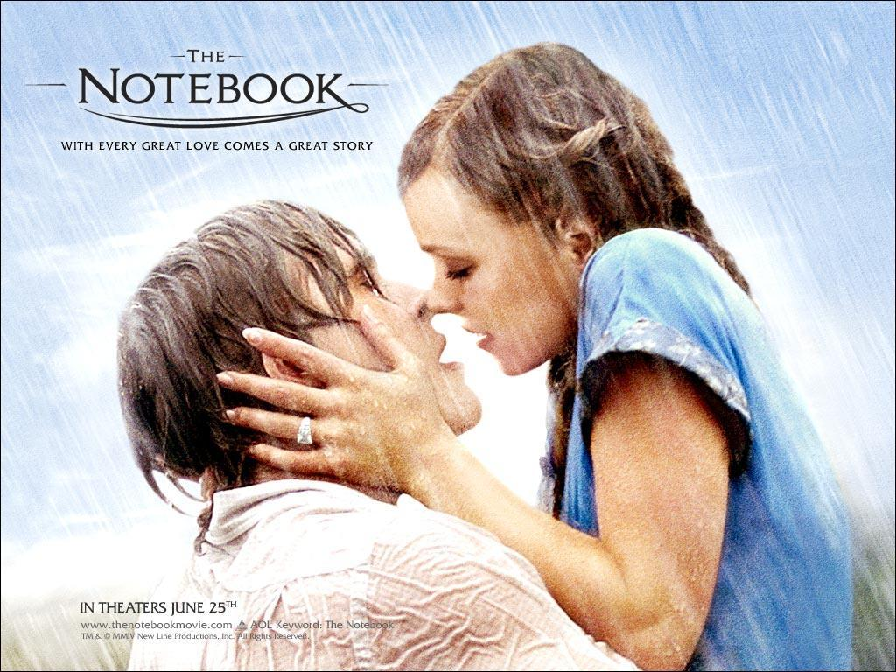

Ryan Gosling en la televisión
Contenido
Joven Hércules
En 1998, se mudó a Nueva Zelanda, donde alcanzó la fama encarnando a Hércules en la serie de televisión “El Joven Hércules”. Esa producción televisiva le llevó al cine de Hollywood, interviniendo junto a Denzel Washington en “Titanes: Hicieron Historia” (2000).
Pequeños proyectos
Ryan apareció en series de televisión canadienses y películas incluyendo "Goosebumps", "Are You Afraid of the Dark?", "Breaker High".
Continuidad
Aunque su carrera empezó muy joven en la televisión, a lo largo de los años se ha centrado plenamente en la actuación cinematografica. La última serie de televisión en la que participo, fue la de Hércules y en 2005 el documental "I'm Still Here: Real Diaries of Young People Who Lived During the Holocaust".
Quizás te interese...

Ryan Gosling y la música

El diario de Noah